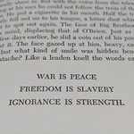

Nineteen Eighty-Four è un romanzo distopico ambientato in un futuro oppressivo, dominato dal controllo totale del Partito e del suo leader, il Grande Fratello.
Quest'opera rappresenta una potente denuncia della repressione della libertà, della sorveglianza, della censura e della manipolazione del linguaggio (nel romanzo è vietato parlare qualsiasi lingua al di fuori della neolingua).
Lo slogan del Partito è composto da tre frasi emblematiche che simboleggiano la manipolazione della realtà per mantenere il controllo totalitario:
 "La guerra è pace. La libertà è schiavitù. L'ignoranza è forza."